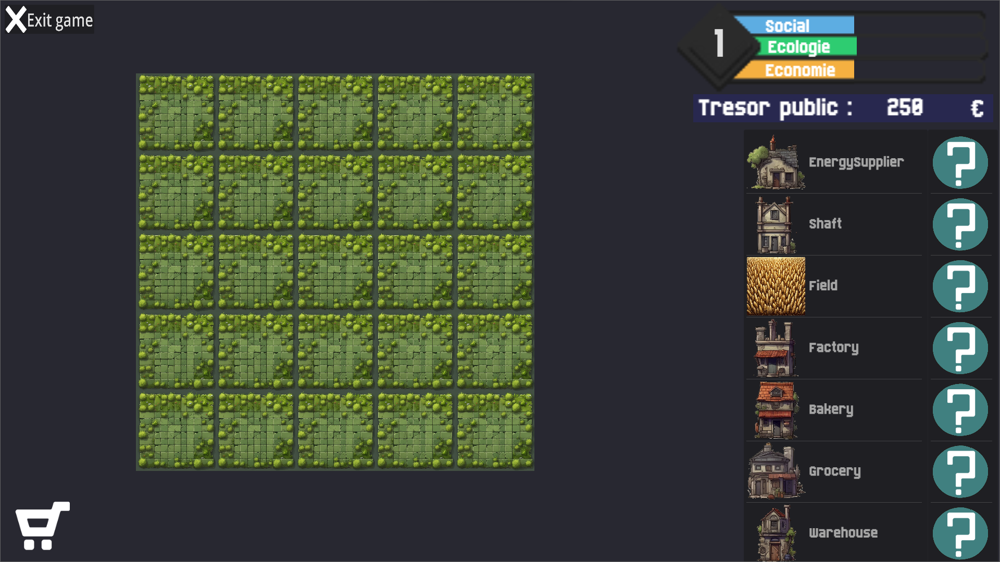
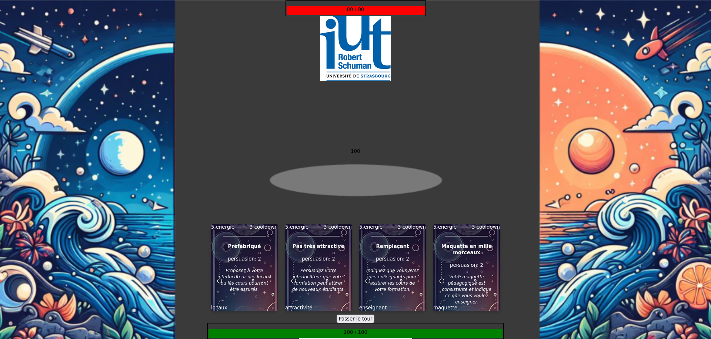

Ma présentation
Bonjour à vous, je m'appelle Aymeric LE ROUX. Je crée ce site afin de vous montrer mes capacités en développement web.
Je suis aussi un grand fan des jeux. Jeux vidéo, jeux de société, jeux de cartes, ils m'intéressent et me plaisent tous.
Je peux vous en présenter certains de mes préférés :
J'ai aussi eu l'occasion, dans le cadre de mes études, de réaliser 2 jeux sérieux.
Le premier est basé sur un citybuilder, c'est-à-dire on place des bâtiments sur une carte tout en essayant de maintenir un équilibre
entre les différentes jauges indiquant l'état de la ville.
Plus d'informations ici : Projet de jeu sérieux

Le deuxième est un rogue-lite dans lequel le joueur doit faire valider son projet de formation auprès de différentes instances, en utilisant des arguments plus ou moins efficaces.
Après chaque combat, de nouveaux arguments sont disponibles et peuvent être utilisés pour les prochains affrontements.
Plus d'informations ici : Re-Master
